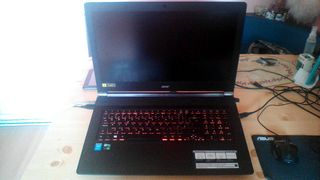
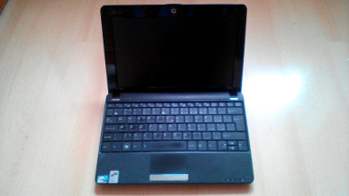
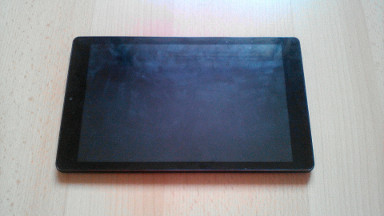
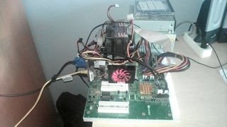
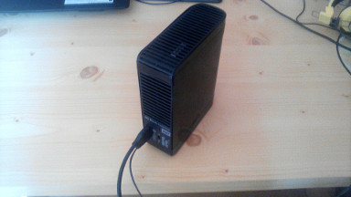

Windows Devices (and Hackintosh)
these are only devices I 100% own but I manage even more devices
Acer Aspire V17 Nitro (VN7-791G)[laptop]

Official website keeps on being moved thanks ACER
CPU: Intel® Core™ i7-4720HQ Processor (4HTTx 3.60 GHz)
iGPU: Intel® HD Graphics 4600
GPU: Acer Nvidia GeForce GTX 950M
RAM: 8GB 1x8GB
MOBO: Aspire VN7-791G
HDD: Seagate ST1000LM014 SSHD(Hybrid) - 1008GB(1TB)
Display: 17inches 1920x1080
Kamera: front: 1.3MP
OS: Windows 10 Home 64bit (1703)
[originally Windows 8.1 Home 64bit]
CPU-Z log: here
CPU: Intel® Core™ i7-4720HQ Processor (4HTTx 3.60 GHz)
iGPU: Intel® HD Graphics 4600
GPU: Acer Nvidia GeForce GTX 950M
RAM: 8GB 1x8GB
MOBO: Aspire VN7-791G
HDD: Seagate ST1000LM014 SSHD(Hybrid) - 1008GB(1TB)
Display: 17inches 1920x1080
Kamera: front: 1.3MP
OS: Windows 10 Home 64bit (1703)
[originally Windows 8.1 Home 64bit]
CPU-Z log: here
Asus Eee Pc 1001HA [Netbook]

Official website
CPU: Intel® Atom® N270 Processor (1.60 GHz)
iGPU: Intel® Graphics Media Accelerator 945
RAM: 1GB 1x1GB
MOBO: Acer 1005Ha
HDD: 160GB (+16GB SDcard)
Display: 10inches 1024x600
Kamera: front: 0.3MP
OS: Tiny7 (eddited windows 7)
[originally Windows XP (I got it with Windows 7 Starter)]
CPU-Z log: not available
CPU: Intel® Atom® N270 Processor (1.60 GHz)
iGPU: Intel® Graphics Media Accelerator 945
RAM: 1GB 1x1GB
MOBO: Acer 1005Ha
HDD: 160GB (+16GB SDcard)
Display: 10inches 1024x600
Kamera: front: 0.3MP
OS: Tiny7 (eddited windows 7)
[originally Windows XP (I got it with Windows 7 Starter)]
CPU-Z log: not available
Umax VisionBook 8Wi Plus [tablet PC]

Official website czech, most likely not sold in US
CPU: Intel® Atom® Z3735G Processor (4x 1.83 GHz)
iGPU: Intel® HD Graphics (7gen)
RAM: 1GB soldered
MOBO: Umax CQM890BCP
HDD: 32GB (+32GB SDcard)
Display: 8inches 1280x800
Kamera: front: 0.3MP, rear: 2MP
OS: Windows 10 home 32bit (1703)
[originally Windows 10 home 32bit (1604)]
CPU-Z log: here
CPU: Intel® Atom® Z3735G Processor (4x 1.83 GHz)
iGPU: Intel® HD Graphics (7gen)
RAM: 1GB soldered
MOBO: Umax CQM890BCP
HDD: 32GB (+32GB SDcard)
Display: 8inches 1280x800
Kamera: front: 0.3MP, rear: 2MP
OS: Windows 10 home 32bit (1703)
[originally Windows 10 home 32bit (1604)]
CPU-Z log: here
P4 Machine -DEAD- [custom PC]

CPU: Intel® Pentium® 4 650 Processor (1HTTx 3.40 GHz)
GPU: Gainward Nvidia GeForce GT 430
RAM: 2GB 4x512MB
MOBO: Intel D915GAV
HDD: none
OS: none
CPU-Z log: not available
GPU: Gainward Nvidia GeForce GT 430
RAM: 2GB 4x512MB
MOBO: Intel D915GAV
HDD: none
OS: none
CPU-Z log: not available
9x Machine -DEAD- [custom PC]
CPU: AMD Sempron™ 2600+
GPU: NVIDIA GeForce FX 5200
RAM: 512MB 1x512MB
MOBO: MSI MS-7021
HDD: none
OS: none
CPU-Z log: here log when I ran Windows XP Home
GPU: NVIDIA GeForce FX 5200
RAM: 512MB 1x512MB
MOBO: MSI MS-7021
HDD: none
OS: none
CPU-Z log: here log when I ran Windows XP Home
Android Devices
Huawei Honor 6A [Smartphone]

Official website czech, not sold in US
CPU: Qualcomm Snapdragon 430 (8x 1.4GHz)
GPU: Adreno 505
RAM: 2GB
Paměť: 16GB internal 32GB SDcard
Display: 5inches 1280x720
Kamera: front: 5MP, rear: 13MP
OS: Android 7.0 EMUI 5.1
CPU: Qualcomm Snapdragon 430 (8x 1.4GHz)
GPU: Adreno 505
RAM: 2GB
Paměť: 16GB internal 32GB SDcard
Display: 5inches 1280x720
Kamera: front: 5MP, rear: 13MP
OS: Android 7.0 EMUI 5.1
Prestigio pmp5780D [tablet]

CPU: ARM Cortex A9 (1.6Ghz)
GPU: Mali 400 MP4
RAM: 1GB
Paměť: around 4GB
Display: 8inches 1024 x 768
Kamera: front: 0.3MP, rear: 5MP
OS: Android 4.1.1 (Rooted)
Problems: Usb port(dead)
GPU: Mali 400 MP4
RAM: 1GB
Paměť: around 4GB
Display: 8inches 1024 x 768
Kamera: front: 0.3MP, rear: 5MP
OS: Android 4.1.1 (Rooted)
Problems: Usb port(dead)
no OS devices
Western Digital My Book Essential [External HDD]

Paměť: Western Digital 700GB
Problems: i thing the HDD will die soon.
Problems: i thing the HDD will die soon.
Hewlett-Packard HP 1740 [monitor]
addapter: VGA TO HDMI